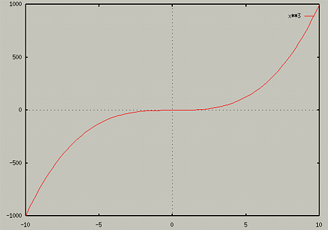

The command used for two-dimensional plots is plot. The
simplest use of it is:
For example, to plot x3, type
You should see something like the following pop up in the graphics
screen.

For another example, to see what the hyperbolic cosine function looks
like, type
This should display

Note that in this picture the scale isn't the best for finding a lot
of information about the graph. It tells us that the function gets
very large as x gets larger. But if we want to see what the
function looks like closer to 0, we need to change the scale. Gnuplot
uses an autoscale mechanicism. It sets the scale so that the graph
will fit on the screen. To change the scale, use one of the following
forms of plot:
- plot [x1:x2] [y1:y2] <function>
- plot [x1:x2] <function> (To just set the x range)
- plot [] [y1:y2] <function> (To just set the y range).
Note, that if you set the range for the x values on one plot, they
will stay that way for future plots. To set the default x range back
to [-10,10], type the following:
Also, if you set the range for the y values, they will stay the same
for future plots as well. You can set GnuPlot back to autoscaling the
y axis by typing the following:
For more information on the set xrange and set autoscale
commands, use the help command.
To see what cosh looks like from x=[-5, 5], type
Or, to see what cosh looks like from y=[0, 10], type
Table of Contents - Previous - A Simple Example - Next - 3D plots
College of Natural Sciences /
University of Northern Iowa /
manager@cns.uni.edu
Copyright © 1996 College of Natural Sciences. All Rights Reserved.
Last Modified: 10/29/96